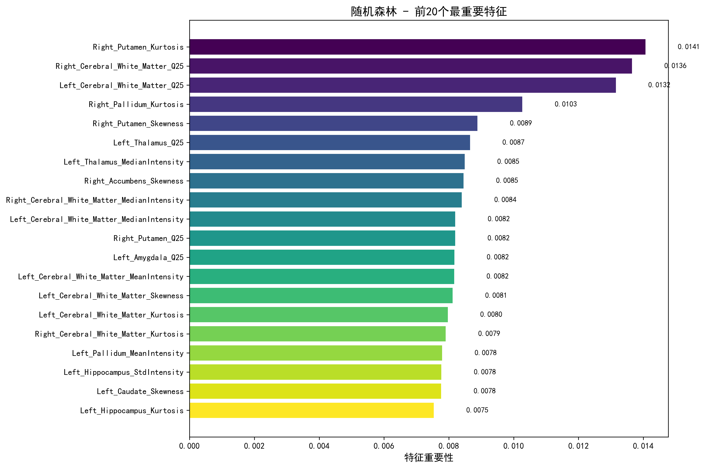
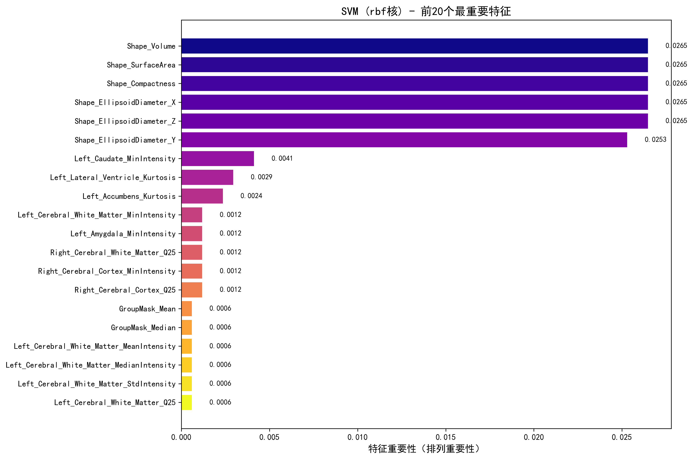

利用先进的三维可视化技术与机器学习算法，实现阿尔兹海默症的早期精准识别与辅助诊断
探索基于多模态特征融合与三维可视化的阿尔兹海默症早期诊断新方法
阿尔兹海默病（Alzheimer's disease, AD）是一种以记忆障碍和认知功能持续下降为特征的神经退行性疾病，占全部痴呆病例的60%-80%。其临床表现主要包括记忆力减退、认知功能障碍以及日常生活能力下降，严重影响患者生活质量并造成沉重的社会与经济负担。
研究表明，AD的神经病理过程通常在临床症状出现前数年甚至数十年便已开始，因此，如何实现疾病的早期精准识别已成为延缓病程进展和改善预后的关键。
在多种神经影像学技术中，结构性磁共振成像（structural MRI, sMRI）凭借其无创性和高空间分辨率，成为了研究AD脑结构异常的重要工具。sMRI能够客观量化脑组织的萎缩模式，尤其是海马、颞叶等与记忆密切相关的区域，其萎缩程度与AD的临床分型和病理严重程度高度相关。
然而，sMRI数据维度高且结构复杂，传统依赖专家经验，手工勾画感兴趣区（ROI）的方式在处理全脑范围的分布式差异时效率有限，且缺乏稳定性与可重复性。
将空间统计分析（体素水平t检验）与机器学习算法（随机森林、SVM）进行深度融合，实现对判别性脑区的精准挖掘。
利用nilearn等可视化工具，将识别出的显著差异脑区以三维高亮渲染的方式展示在标准脑模板上，直观呈现AD相关脑结构异常。
构建融合局部ROI特征、全脑统计特征与临床变量的多尺度特征体系，实现从微观组织特性到宏观形态改变的多层次信息互补。
阿尔兹海默症关键脑区三维交互式可视化
本平台提供两个独立的三维脑可视化系统，分别展示统计显著性脑区和特征重要性脑区。
基于多特征融合的高精度阿尔兹海默症分类模型
本研究基于融合后筛选的198个高方差特征，分别构建了随机森林（RF）与支持向量机（SVM）模型，用于执行三分类任务（Demented, Nondemented, Converted）。通过分层五折交叉验证评估模型性能，结果显示两种模型均表现出卓越的分类能力。
对模型决策机制的特征重要性分析，为理解AD的结构生物标志物提供了新的洞见。
随机森林模型：对分类贡献最大的特征包括右侧壳核峰度、右侧大脑白质第25百分位、左侧大脑白质第25百分位、右侧苍白球峰度及右侧壳核偏度。
支持向量机模型：重要性排名最前的特征为三维形态学参数，包括差异脑区体积、表面积、紧凑度及其在三个空间维度上的椭球等效直径。


上传患者MRI图像，获取AI智能诊断与风险分析
重要提示：对于Analyze格式，请同时上传.hdr和.img两个文件！
请上传患者的T1加权结构性磁共振成像（sMRI）图像。系统将自动提取多维度特征数据集，并使用训练好的机器学习模型进行阿尔兹海默症风险分析。
随机森林 (Random Forest) 是一种基于决策树的集成学习算法，通过构建多棵决策树并集成它们的预测结果（投票或平均）来提升模型的准确性和稳定性。其核心思想是利用Bootstrap抽样从原始训练集中抽取多个样本集，分别训练决策树，并在节点分裂时随机选择特征子集，从而降低过拟合风险，增强泛化能力。
在医学影像分析领域，随机森林具有以下突出优势：
尽管支持向量机（SVM）在部分指标上略优，且在小样本高维空间表现优秀，但本研究最终选择随机森林作为核心诊断模型，主要基于以下考量：
当前模型性能：
准确率：97.25% | 平均AUC：0.990
系统正在处理，请稍候...